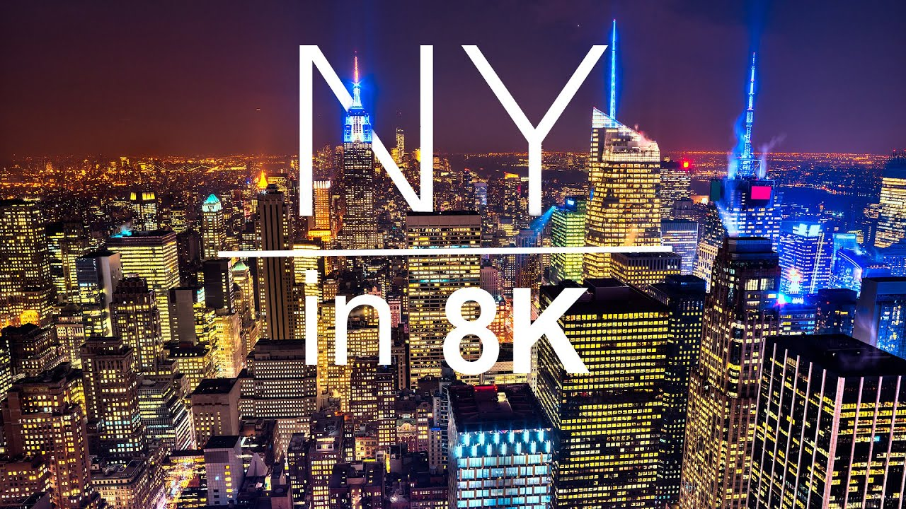
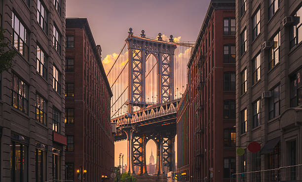
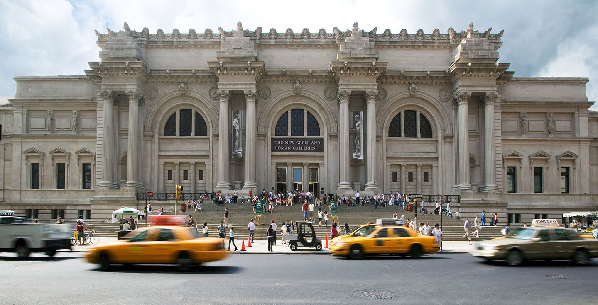
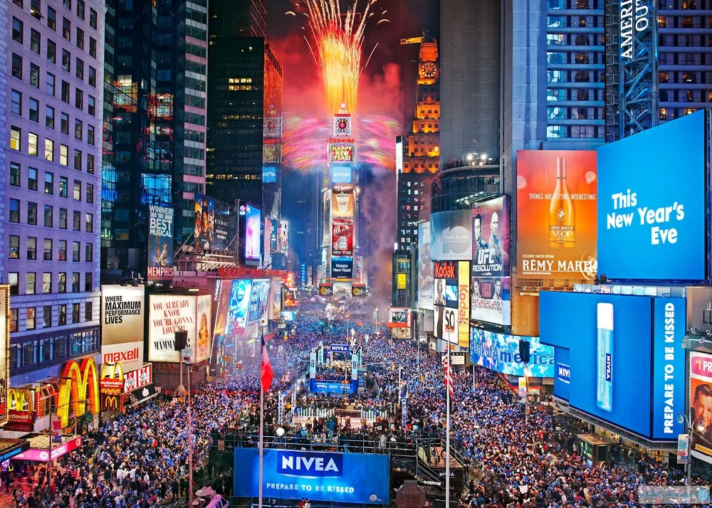
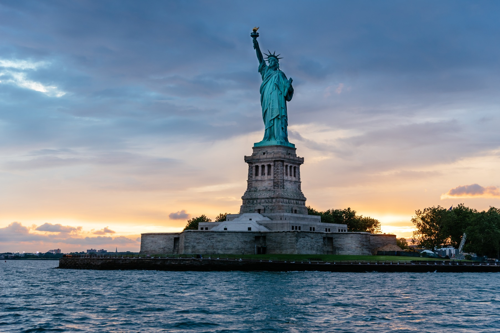
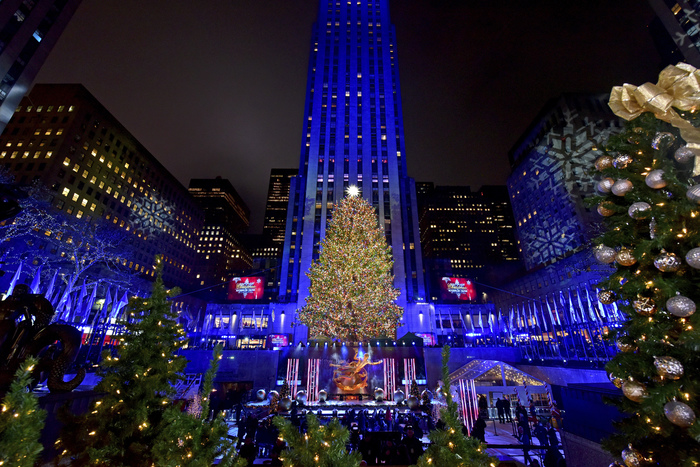

It is Better to
Travel Well Than
to Arrive
ABOUT NEWYORK
Introduction
to New York
New York is a melting pot of cultures,
with people from all around the world
living and working together.
The city never sleeps,
offering endless opportunities for
visitors to explore its rich history,
vibrant nightlife, and incredible food scene.


our introduction
Let me introduce you to tourist
attractions in New York



The Metropolitan
Museum of Art, MET
The Metropolitan Museum of Art (The Met) is the largest and one of the most
prestigious art museums in the United States, located on
Fifth Avenue in New York City. Founded in 1870, it houses a vast collection of over
two million works of art, spanning 5,000 years of history from cultures all around
the world.
The Met’s collection includes ancient Egyptian artifacts, European paintings by
masters like Van Gogh and Rembrandt, Greek and Roman sculptures, medieval
armor, and modern art. The museum is divided into several wings, each dedicated to
different artistic styles and historical periods.
One of its most famous areas is the Temple of Dendur,
an ancient Egyptian temple relocated from the Nile Valley to The Met.
In addition to its permanent collection, The Met hosts world-class temporary
exhibitions, concerts, lectures, and educational programs. Every year,
it also hosts the Met Gala, one of the most glamorous fashion events in the world.
With its breathtaking architecture, diverse collection, and cultural significance,
The Met is a must-visit for art lovers and history enthusiasts alike.

Times Square
Times Square is one of the most famous and vibrant destinations in New York City,
known for its towering digital billboards, Broadway theaters, and nonstop energy.
Located at the intersection of Broadway and Seventh Avenue, it serves as a major
commercial and cultural hub, attracting over 50 million visitors every year.
Nicknamed "The Crossroads of the World,"
Times Square is home to some of the world’s most famous theaters, shopping centers,
restaurants, and entertainment venues. The area is best known for Broadway,
where world-class musicals and plays captivate audiences every night.
Iconic stores such as the M&M’s World,
Disney Store, and Hershey’s Chocolate World make it a paradise for tourists.
One of the most famous events held in Times Square is the New Year's Eve Ball Drop,
a tradition that dates back to 1907. Every December 31st,
millions of people gather in the square, while millions more around the world watch
on television as the crystal ball drops, marking the beginning of a new year.
With its bright neon lights, lively street performers, and an atmosphere that never
sleeps, Times Square embodies the energy and excitement of New York City.
Whether you're exploring during the day or witnessing its dazzling lights at night,
it’s a must-visit destination for travelers from all over the world.

Statue of Liberty
The Statue of Liberty is one of the most iconic landmarks in the United States,
located on Liberty Island in New York Harbor. A gift from France in 1886,
it symbolizes freedom, democracy, and hope.
Standing 305 feet (93 meters) tall, the statue depicts Libertas, the Roman goddess
of liberty, holding a torch in one hand and a tablet inscribed with the date of the
U.S. Declaration of Independence (July 4, 1776) in the other.
At her feet lies a broken chain, representing freedom from oppression.
Visitors can take a ferry to the island to explore the Statue of Liberty Museum,
climb to the crown for stunning views, and visit nearby Ellis Island,
which served as a major immigration station in the early 20th century.

Rockefeller Center
Rockefeller Center is a world-famous commercial and
cultural complex located in the heart of Manhattan,
New York City. Developed in the 1930s by John D. Rockefeller Jr.,
it consists of 19 buildings and is a major hub for business,
media, entertainment, and tourism.
One of its most popular attractions is the Top of the Rock Observation Deck,
offering breathtaking panoramic views of the New York City skyline.
During the winter season, the Rockefeller Plaza ice-skating rink and the annual
Christmas tree lighting ceremony draw thousands of visitors,
making it a beloved holiday tradition. The complex is also home to NBC Studios,
where famous shows like Saturday Night Live and The Tonight Show are filmed.
With its mix of historic architecture, public art installations, shopping, dining, and
cultural events, Rockefeller Center remains a must-visit destination for both locals
and tourists alike.